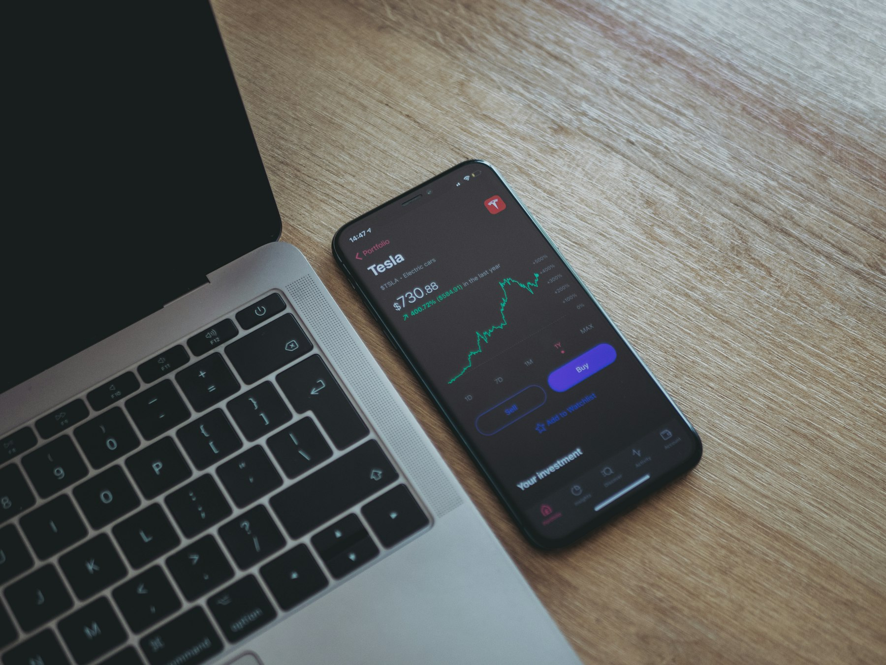
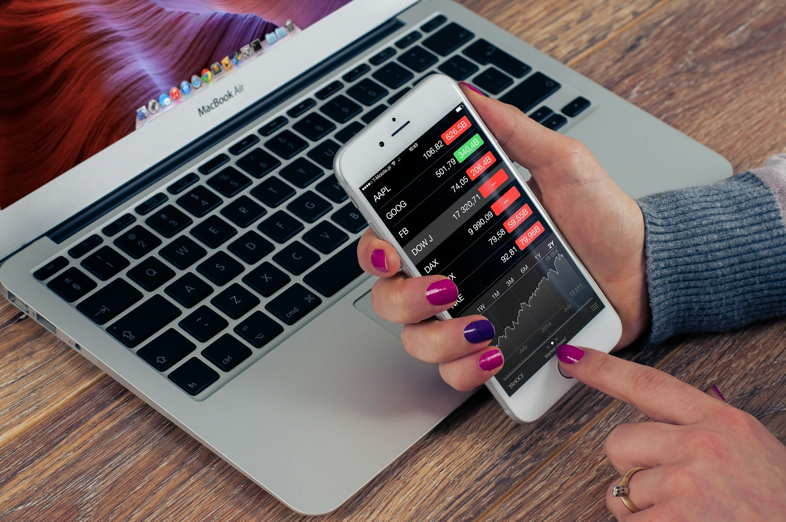
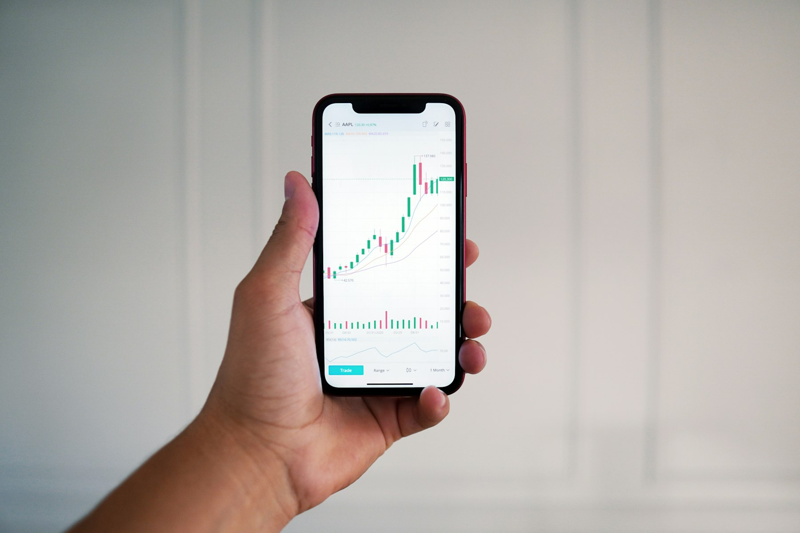

TL;DR
Robinhood is the fastest US starter, but can hide true costs. Fidelity (US) and DEGIRO (EU) are best for education and long-term growth. Trade Republic beats on speed in the EU but lacks depth. Start with broad ETFs, avoid daily trades, and review your fit after 30 days.
Quick Verdict: Robinhood Is the Simplest Entry, but Not Always the Wisest Move

If you want to buy your first $100 of Apple or S&P 500 stocks this weekend, Robinhood makes that possible with zero commission and a no-minimum account. But simplicity brings its own tradeoffs.
For a US-based novice, Robinhood is the fastest way to place a trade in under 10 minutes, track basic performance, and experiment with low risk. Aspiring EU investors often try eToro or Trade Republic, which offer comparable beginner onramps.
However, while Robinhood looks free, there are hidden costs in the form of payment for order flow and limited research access. Apps like Fidelity and Schwab are less flashy but bring robust education and fewer hidden gotchas, though the initial setup can feel more involved for a new user.
Example: Setting up a Robinhood account with $100, you can buy a fractional share with no upfront fees. But over 12 months, the lack of guidance means a single mistake—like panic-selling on a dip—could cost more than the $5–$10 in explicit fees you thought you avoided.
The fastest answer: For immediate hands-on learning, Robinhood works in the US and Trade Republic is the sleekest in most of the EU. But if you plan to grow your portfolio monthly beyond $1,000 or want stronger learning, consider Fidelity (US) or DEGIRO (EU) even with a slightly slower onboarding.
Who Each Stock Trading App Is Actually For: From Total Beginners to Side Hustlers

Matching the app to your investing personality matters more than you think. Many first-timers reach for the flashiest interface, but the best fit depends on who you are and how you plan to use it.
Best for total beginners: Robinhood (US) and Trade Republic (EU) reduce friction. Their onboarding flows are fast, interfaces are uncluttered, and no intimidating research screens slow you down. Within 15 minutes, you can deposit $50 and start browsing ETFs or big-name stocks without feeling lost.
Best for cautious learners: Fidelity and Schwab (US) or DEGIRO (EU) provide far more educational resources, simulation modes, and accessible support. If you want to take your time, try small monthly contributions ($100–$200) and watch how your choices play out, these apps are less likely to overwhelm with jargon or upsells.
Side-hustlers and goal-based savers: Webull (US), eToro (EU/global), and, to an extent, Revolut (EU/UK) let you dabble in stocks, crypto, and even ETFs from the same dashboard. That speed can empower busy users but introduces new temptations to overtrade—a classic mistake for any side hustle investor.
One tradeoff: Apps with a wider selection often require more self-learning before you avoid buying the wrong share class or mistiming your first sale. Rushed decisions cost real money in trading—pick based on your real pace and patience.
Where the Differences Start to Matter: Fees, Features, and Friction After 30 Days
Your experience changes dramatically after the first 30 days. What’s smooth in week one can get sticky when you scale up or need support. Here’s how each app stacks up on cost, features, and long-term usability:
Too many beginners overlook ongoing friction: Robinhood and Trade Republic feel friendly until you need tax files, higher-quality research, or security tools. Schwab or DEGIRO might seem fussy at first, but their robust infrastructure and responsive support save headaches in tax season or sudden market swings.
Dividing the real tradeoffs:| App | Best for | Fees & Costs | Experience After 30 Days |
|---|---|---|---|
| Robinhood | Instant setup, US beginners | No commission; hidden spreads | Simple for small trades, research is weak |
| Fidelity | Learning, support | Zero commission, no account fees | Powerful education, great long-term |
| Webull | Options/side hustlers, mobile-first | No commission, advanced analytics | Can overwhelm; risk of over-trading |
| Trade Republic | EU quick start | €1 per trade, low FX fee | Easy for basics, weak education |
| DEGIRO | Cheap EU investing | Low per-trade; €2.50 connectivity | Great for discipline, complex to start |
| eToro | Copy trading, diversification | No commission, spreads; withdrawal fee | Good for dabblers, not for retirement |
After month one, US investors with monthly contributions above $250 likely benefit from Fidelity’s education and easier-to-navigate statements for taxes. In the EU, DEGIRO’s costs are lowest for buy-and-hold traders—just watch for the €2.50 annual connectivity fee. Robinhood and Webull are perfect for the impatient, but if you need help with a lost password, support can disappoint. The key decision: Prioritize what you’ll need after your second and third deposit, not just in your first week.
A Real Setup Path: Starting With $200 and Growing a Small Account Month by Month
Before you open any app, map out the first four weeks. Here’s a practical sequence for a new US investor starting with $200 monthly, or an EU-based beginner aiming for the same growth.
- Download your preferred app (e.g., Robinhood for US, Trade Republic or DEGIRO for EU). 2. On day one, deposit $200 via instant bank transfer. Wait for confirmation—it’s usually less than 24 hours in the US, sometimes up to 2 business days in the EU.
- In week one, buy a single broad ETF (VOO for US, VWCE in EU) to avoid narrow bets; allocate at least 80% of your $200 here. Remaining 20%? Try a single share of a stock you follow.
- Each week, review your app’s performance tab. Many beginners make the mistake of trading too often—limit yourself to one additional buy per month until you’ve observed results for 30 days.
Scenario: Lisa, a new saver in Berlin, starts with €200 on Trade Republic. She puts €160 into the iShares MSCI World UCITS ETF, €40 into a single Siemens share. In her first 30 days, she resists daily trading. After tracking fees and returns each week, she sees total costs of only €1.50. Here, patience means her first month matches what a seasoned investor would do.
In practice, your biggest decision comes after 30 days: increase your monthly deposit, diversify, or switch platforms if you find the education lacking. Iterating beats chasing fancier dashboards.
Mistakes and Overkill Choices: Where Beginners Often Go Wrong and Why

Most beginner mistakes are driven by the illusion of free trading. Apps tout $0 commissions, but fail to highlight spreads, foreign exchange markups, or withdrawal fees. Robinhood and Webull users often learn too late that poor order execution or overtrading small amounts erode your returns faster than fees at Fidelity or Schwab.
Classic mistake: Chasing meme stocks or cryptocurrencies because they’re a tap away. Traders who bought a $150 meme stock on day one and sold within a week typically lost 7–12% to spread and poor timing—far more than a €1 trade fee.
Overkill trap: Beginners often start with Interactive Brokers (IBKR) in search of the lowest global fees, but spend their first month stuck in complex interfaces or failing KYC checks. Unless you’re trading more than $20,000 per year or need multi-currency exposure, IBKR is pure overkill. The time cost outweighs any fractional fee savings.
A better step: Early on, choose apps with built-in tutorials and enforce your own limit—no more than $20 of trades per week until you’ve spent 30 days learning the app’s quirks. This avoids the common decision to switch platforms mid-way, which often fragments your statements and tax forms.
Final Recommendation by User Type: Make Your First Trade Count (and Avoid Regret)

The smart choice depends on your goals, appetite for education, and future scale—not just the first trade. For the quickest US start, Robinhood lowers all the entry barriers, but if you want to double your monthly commitment or need detailed guidance, Fidelity or Schwab grow better with you. In the EU, Trade Republic wins for instant execution, but DEGIRO leads once you’re managing more than €1,000.
For first-timers: Start with a simple, regulated platform (Robinhood or Trade Republic) only if your goal is learning by doing and you don’t mind missing out on deep research tools for your first 30 days. For cautious planners aiming to build a side hustle or retirement base, pay attention to education libraries and reporting features in the setup process—Fidelity and DEGIRO excel here.
Sequence to success: 1. Decide your monthly investing budget and platform based on your main research or support need. 2. Make your first trade a broad ETF (ratio: 80% ETF, 20% individual stock for variety and risk control).
- Commit to weekly account check-ins but avoid daily trading—mistakes born of impatience drive most regrets. 4. After 30 days, review: Do the reporting tools and costs still feel reasonable as your balance grows?
If not, consider a one-time transfer to a better fit before your portfolio fragments.
No decision is forever, but the fastest path to confidence is starting small, sticking with a simple app for 30 days, and upgrading only when your real needs outgrow the interface.
FAQ
What should beginners look for in a stock trading app?
Look for low or no account minimums, transparent pricing, a user-friendly interface, and strong educational resources. A regulated, respected app with customer support is essential—tools like Fidelity (US), Trade Republic, or DEGIRO (EU) deliver these features. Test with a small amount ($50–$100) before scaling up.
How much do trading apps charge in fees?
Commission-free trading is common, but many apps earn through spreads (the difference between buy/sell prices), foreign exchange fees (0.1–0.5% typical for EU), and withdrawal or inactivity fees. For example, Robinhood and Webull advertise $0 commissions, but users may pay through slightly worse trade execution. Platforms like DEGIRO charge €1–2 per stock trade, but offer total transparency.
What’s the best approach for making your first stock purchase?
Start with a broad-market ETF to diversify risk, such as VOO (US) or VWCE (EU), allocating at least 80% of your initial deposit there. Make a single trade in your first week, then wait and observe performance for 30 days before making changes. Add small monthly contributions ($50–$200) until you’re comfortable.
How do I avoid the classic beginner mistake?
Avoid trading too frequently and chasing trending stocks; this leads to higher spreads, poor timing, and regret. Stick to monthly contributions, review your activity weekly, and use the platform’s educational materials to guide your decisions—not just flashy buy/sell buttons.
This article is reviewed for practical accuracy and updated as trading platforms or fees change. Recommendations are for informational purposes only, not financial advice.
Next step
Use the article as a decision point, not just reading material. Your next system matters more than more browsing.
Search more articles
Find related tools, workflows, and guides.
Photo credits
- Photo 1: Aidan Hancock via Unsplash
- Photo 2: Firmbee.com via Unsplash
- Photo 5: Markus Winkler via Unsplash
- Photo 6: Joshua Mayo via Unsplash